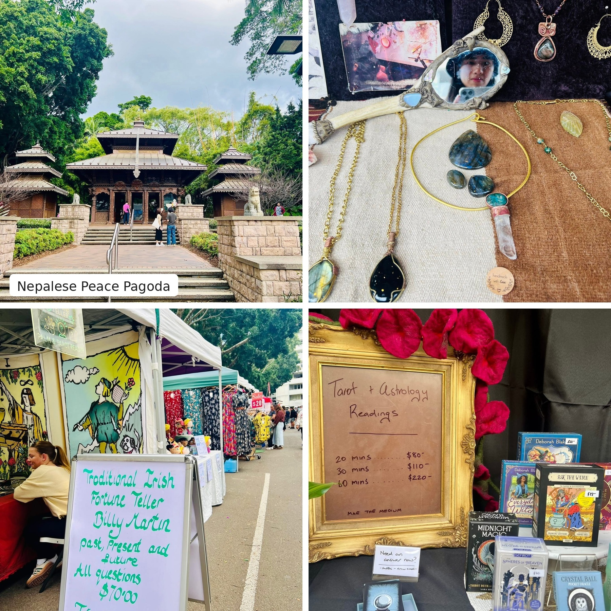

When I packed for the 2025 AFAANZ Conference in Brisbane, I expected the usual ingredients of an academic conference: presentations, research papers, questions, discussions — and probably more PowerPoint slides than anyone could reasonably remember. 😅
What I did not expect was to come home thinking about massages, ferry rides, photo booths, new friendships, and some of the best learning that happens when nobody is presenting a paper.
I went to Brisbane to present my research and spend a few days with scholars working on topics close to my own interests — climate-related disclosure, ESG, market behaviour, and climate finance.
Presenting your own research is always an interesting experience. You spend months thinking deeply about one question and end up with a manuscript that can be over 100 pages long — only to have about fifteen minutes to convince a room full of people that they should care about it too.
A PhD teaches efficiency in unexpected ways.
But some of my favourite moments at AFAANZ happened between the serious academic ones.
After discussing research, there were nail treatments and massages. There was a photo booth. There was a gala dinner with live music. My friends and I could talk, laugh, take silly photos, and temporarily forget that regressions existed. 😌
I loved the contrast.
One moment, you are discussing climate-related disclosure and market responses.
The next, you are trying to decide which photo-booth pose looks the least embarrassing. 🤭
Apparently, both belong to academic life. 😉
Brisbane itself became part of the experience. I explored the city, visited the University of Queensland, and discovered that ferries are part of everyday public transport.
While walking around South Bank near the Brisbane River, I also came across the Nepalese Peace Pagoda. I later learned that it had originally been built for World Expo ’88 and was hand-carved in the Kathmandu Valley over two years by 160 Nepalese woodcarvers. Even more surprisingly, it is one of only three such pagodas outside Nepal.
Nearby, I wandered through the Collective Markets, a weekend market filled with art, crafts, jewellery, and handmade goods from local makers. But what caught my attention most was something completely unexpected: I found not one, but three fortune-teller stalls. 🔮
Apparently, Brisbane had a few more things to tell me about my future than I had expected. 😉
None of this was technically part of my research.
I think that's a pretty good conference outcome.
